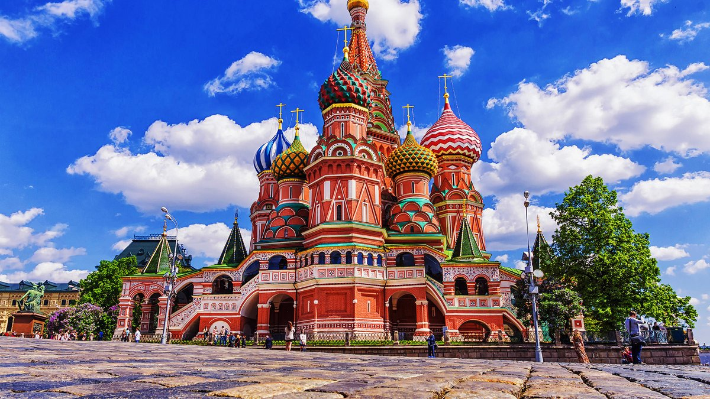

Красная площадь: Сердце Москвы

Красная площадь — это центральная площадь Москвы, расположенная между Московским Кремлём и историческим купеческим кварталом Китай-города. Она является одной из самых известных и посещаемых достопримечательностей России.
История Красной площади начинается в конце 15 века, когда по приказу Ивана III были снесены деревянные постройки вокруг Кремля, угрожавшие царской резиденции пожарами. С тех пор площадь стала местом проведения различных важных событий, включая военные парады, государственные церемонии и празднования Нового года.
На Красной площади находятся такие знаменитые объекты, как:
- Кремль — с его стенами и башнями, включая Спасскую башню с курантами.
- Собор Василия Блаженного — яркий пример русской архитектуры, построенный в 16 веке.
- Государственный Исторический музей — хранилище исторических реликвий.
- ГУМ — один из крупнейших торговых центров Москвы.
- Мавзолей Ленина — последнее пристанище советского лидера Владимира Ленина.
Моя прогулка по Красной площади началась утром, когда туристов было ещё немного. Я любовался яркими куполами Собора Василия Блаженного и сделал несколько фотографий на фоне Спасской башни. Площадь — это не только историческое место, но и живое пространство, где проходят различные мероприятия.
Совет: Посетите площадь вечером, чтобы увидеть её в свете огней, особенно зимой, когда она украшена новогодними декорациями!